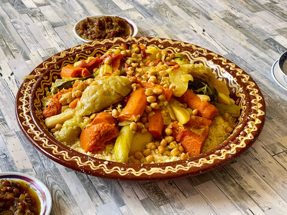

Moroccan Couscous

Description
This Moroccan couscous recipe is a delightful combination of fluffy grains, spices, and vibrant vegetables, perfect as a side dish or a main meal.
Ingredients
- 1 cup couscous
- 1 1/4 cups vegetable broth or water
- 2 tbsp olive oil
- 1 tsp ground cumin
- 1 tsp ground coriander
- 1/2 tsp ground cinnamon
- 1 red bell pepper, diced
- 1 zucchini, diced
- 1 carrot, diced
- 1 cup chickpeas, cooked or canned
- Salt and pepper to taste
- Fresh parsley or cilantro for garnish
Directions
- In a saucepan, bring the vegetable broth (or water) to a boil. Add the couscous, remove from heat, and cover. Let it sit for 5 minutes to absorb the liquid.
- Meanwhile, heat the olive oil in a skillet over medium heat. Add the diced bell pepper, zucchini, and carrot. Sauté until the vegetables are tender, about 5-7 minutes.
- Fluff the couscous with a fork and add it to the skillet with the sautéed vegetables. Mix in the chickpeas and spices, stirring to combine.
- Season with salt and pepper to taste. Cook for another 2-3 minutes until everything is heated through.
- Garnish with fresh parsley or cilantro before serving.
Serving Suggestion
Serve the couscous warm, alongside grilled meats or as a vegetarian main dish.
Home